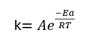
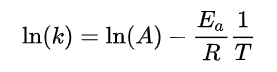
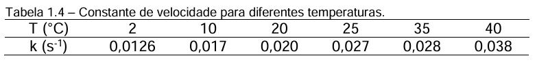
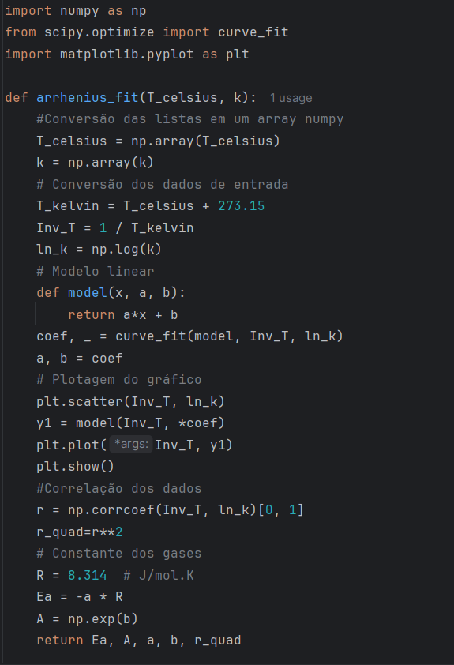
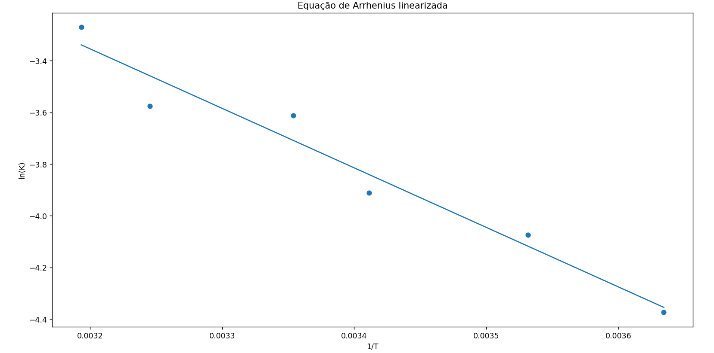
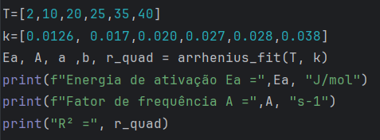
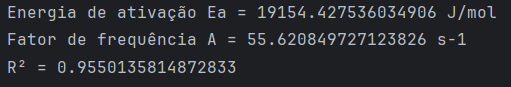

Essa postagem tem que como objetivo calcular os parâmetros da equação de Arrhenius, sejam estes a Energia de ativação e Fator de frequência, e o R2 da correlação obtida com os dados cinéticos experimentais de temperatura e constante de velocidade. Os dados do problema a ser resolvido forma extraídos da apostila “Cinética Química Aplicada” disponível online no site da Universidade de São Paulo, Escola de Engenharia de Lorena.
O problema será resolvido de forma a elaborar uma função que receba um array de qualquer tamanho de dados de temperatura em graus Celsius e um array de constante de velocidade do mesmo tamanho. Será elaborada uma função reaproveitável, que possa ser utilizada para outro conjunto de dados.
Será possível também plotar o gráfico da dispersão dos dados experimentais com a curva ajustada com o método da biblioteca do Scipy.
A equação de Arrhenius estabelece uma correlação entre a constante de velocidade de uma reação química e a temperatura. Frequentemente ela é utilizada para obter a Energia de ativação de uma reação, tendo em mãos os dados experimentais de velocidade de reação e temperatura. A equação é apresentada na Figura 1. Nessa equação temos que k é a constante de velocidadede reação, Ea é a energia de ativação e A é o fator de frequência.

Ao aplicar o logaritmo natural na equação de Arrhenius, obtém-se uma forma linear que permite determinar a energia de ativação a partir da inclinação da reta em um gráfico de ln(k) versus 1/T. Essa forma linearizada da equação de Arrhenius é apresentada na Figura 2 .

Na Figura 3 são apresentados os dados experimentais de temperatura e constante de velocidade de reação. A partir desses dados e da equação de Arrhenius linearizada, deve-se obter os parâmetros Ea, A e também o R2, para verificar se os dados experimentais se ajustam adequadamente a um modelo linearizado.

Na Figura 4 é apresentado o algoritmo para obtenção da energia de ativação a partir dos dados experimentais e para plotar o gráfico com os dados da dispersão e a equação de Arrhenius linearizada.
Foi criada uma função chamada arrhenius_fit que recebe duas listas como parâmetros: uma lista são os dados de temperatura
em graus Celsius e a constante de velocidade de reação em s
O algoritmo segue com os comando para plotagem do gráfico e o comando para obtenção da correlação dos dados, para sabermos se os dados experimentais tiveram um bom ajuste ao modelo linear.

Na Figura 5 temos a dispersão dos dados experimentais e a reta que representa ajuste linear obtido, no plano (1/T) x ln(K). Na Figura 6 temos duas listas, uma com as temperaturas em graus Celsius e outra com a constante velocidade de reação para as temperaturas. Quando é feito comando de entrada de dados na função arrhenius_fit, essas duas listas são transformadas em arrays no numpy, como já foi dito mais acima, e são feitas as operações necessárias para cálculo da Energia de ativação.
Na Figura 7 são apresentados o valor da Energia de Ativação, do fator de frequência A, e do fator de correlação do ajuste, que foi de 0,95501, indicando uma boa correlação. O valor da Energia de ativação e do fator de frequência estão de acordo com os resultados apostila citada, validando o método de resolução proposto


Desenvolvimento : Química Programada